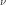
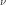
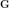

3.4. Fourier Transform¶
The 1D Fourier transform is:
To show that it works:
If  is time (unit
is time (unit ![[\mathrm{s}]](../_images/math/3f418b5486e5929d174a98608553b288ff0cbc3d.svg) ), then
), then  is angular frequency (unit
is angular frequency (unit
![[\mathrm{rad}/\mathrm{s}]](../_images/math/076d57f033e50d824ed530309ec58577853f9068.svg) ). One can express the Fourier transform in terms of
ordinary frequency  (unit
). One can express the Fourier transform in terms of
ordinary frequency  (unit ![[1/\mathrm{s}] = [\mathrm{Hz}]](../_images/math/8555a364ad0f502f05696ea5fb6d9a479f87e7f3.svg) ) by
substituting :
) by
substituting :
Both transformations are equivalent and only differ in whether we
express the transform in terms of or ,
the conversion
being given by .
Third frequently used convention that is however not equivalent to the above is:
The 3D Fourier transform is:
(3.4.1)¶
With obvious analogs for other conventions and dimensions.
The sign convention in the exponentials is arbitrary, one can as well flip the sign of the direct and inverse transforms. In particular, one often uses both sign conventions in the same equation. Consider a spacetime plane-wave . Then we obtain (using plus sign convention in the exponential for the direct transformation):
Finally, the equation  depends
on the metric signature, in this case .
For a signature we would get
.
depends
on the metric signature, in this case .
For a signature we would get
.
Unlike the normalization convention, where one has to be very careful, the sign convention in Fourier transform is not a problem, one just has to remember to flip the sign for the inverse transform.
3.4.1. Shift Theorem¶
The Fourier transform of a shifted function, in 3D:
3.4.2. Scaling¶
For :
3.4.3. Derivative¶
The Fourier transform of a derivative, in 3D:
![F[\partial_i f(\mathbf{x})]
= \int_{-\infty}^{\infty} (\partial_i f(\mathbf{x})) e^{-i\bomega \cdot
\mathbf{x}}\,\d^3 x =
= \left[f(\mathbf{x}) e^{-i\bomega \cdot
\mathbf{x}}\right]_{-\infty}^{\infty}
-\int_{-\infty}^{\infty} f(\mathbf{x}) \partial_i e^{-i\bomega \cdot
\mathbf{x}}\,\d^3 x =
= -\int_{-\infty}^{\infty} f(\mathbf{x}) \partial_i e^{-i\omega_j
x^j}\,\d^3 x =
= -(-i\omega_i)\int_{-\infty}^{\infty} f(\mathbf{x})
e^{-i\bomega \cdot \mathbf{x}}\,\d^3 x =
= i\omega_i F[f(\mathbf{x})]\,.](../_images/math/327078dfc670542b435c4932fbe53a08aae5713a.svg)
An alternative derivation is to start from:
and differentiate both sides:
from which:
3.4.4. Convolution¶
The convolution of two functions and  is defined as:
is defined as:
The Fourier transform of a convolution is:
And for the inverse transform:

= {1\over 2\pi} \int_{-\infty}^\infty \int_{-\infty}^\infty
f(y) g(\omega-y) \,\d y\, e^{i\omega x}\d \omega =
= {1\over 2\pi} \int_{-\infty}^\infty \int_{-\infty}^\infty
g(\omega-y) e^{i\omega x} \d \omega\, f(y) \,\d y =
= {1\over 2\pi} \int_{-\infty}^\infty \int_{-\infty}^\infty
g(u) e^{ix (u+y)} \d u\, f(y) \,\d y =
= 2\pi {1\over 2\pi} \int_{-\infty}^\infty g(u) e^{ix u} \d u
{1\over 2\pi}
\int_{-\infty}^\infty f(y) e^{ix y} \d y
= 2\pi F^{-1}[f(\omega)](x)\ F^{-1}[g(\omega)](x)](../_images/math/b9de11b8604335aec9f5629da508a94beb556958.svg)
Fourier transform of a function multiplication is:
and for the inverse transform:
3.4.5. Radial Fourier Transform¶
As a special case when the function  is spherically symmetric,
we introduce spherical coordinates such that the
is spherically symmetric,
we introduce spherical coordinates such that the  -axis is along the
-axis is along the
 vector and calculate (we use and ):
vector and calculate (we use and ):
![F[f(\mathbf{x})] \equiv \tilde f(\bomega)
= \int_{-\infty}^{\infty} f(\mathbf{x}) e^{-i\bomega \cdot
\mathbf{x}}\,\d^3 x
= \int_{-\infty}^{\infty} f(r) e^{-i\bomega \cdot
\mathbf{x}}\,\d^3 x =
= \int_0^\infty\d r \int_0^\pi\d\theta \int_0^{2\pi}\d\phi f(r)
e^{-i \omega r \cos\theta}\,r^2\sin\theta =
= 2\pi \int_0^\infty\d r \int_0^\pi\d\theta f(r)
e^{-i \omega r \cos\theta}\,r^2\sin\theta =
= 4\pi \int_0^\infty f(r) \sinc(\omega r) \,r^2 \d r =
= 4\pi \int_0^\infty f(r) {\sin\omega r \over \omega r}\,r^2 \d r =
= {4\pi\over\omega} \int_0^\infty r\sin(\omega r) f(r) \,\d r\,,](../_images/math/459b5262205bf74166d31db0d73458e5d1f9b1ce.svg)
where we used:
So the transform is real and spherically symmetric, since the result only
depends on .
Similarly, for the inverse transform:
3.4.6. Examples¶
Rectangular Function¶
The rectangular function is defined as:
The Fourier transform is:
Dirichlet Kernel¶
The Dirichlet kernel is a partial sum of complex exponentials:

From the definition, it is a periodic function with period  .
.
Integral of it is equal to one:
also
The Dirichlet kernel converges towards a train of delta functions (called Dirac comb, see the equation (3.4.6.2) in the next section):
(3.4.6.1)¶
Let us do the crucial step in more details using distributions:
Where we used the fact that
![\left[\lim_{N\to\infty} \int_{-\pi}^\pi
{\sin\left(\left(N+\half\right)(x+2\pi n)\right)
\over 2\pi \sin\left(x+2\pi n\over2\right)}
\varphi(x+2\pi n) \,\d x \right] - \varphi(2\pi n) =
= \left[\lim_{N\to\infty} \int_{-\pi}^\pi
D_N(x+2\pi n)
\varphi(x+2\pi n) \,\d x \right] - \varphi(2\pi n) =
= \lim_{N\to\infty} \int_{-\pi}^\pi
D_N(x+2\pi n)
\left(\varphi(x+2\pi n)-\varphi(2\pi n)\right) \,\d x =
= \lim_{N\to\infty} \int_{-\pi}^\pi
{\varphi(x+2\pi n)-\varphi(2\pi n)
\over 2\pi\sin\left(x+2\pi n\over 2\right)}
\sin\left(\left(N+\half\right)(x+2\pi n)\right)
\,\d x =
= 0](../_images/math/98abf7da15c9408a86b89c365481881826bf76c7.svg)
Dirac Comb (Shah) Function¶
The Dirac comb function, also called the Shah function, is defined as:
It has the following scaling property:
and for with :
From which a train of delta functions  distance apart is expressed using a
Dirac comb as:
distance apart is expressed using a
Dirac comb as:
Using the identity (3.4.6.1), the infinite sum of complex exponentials is also equal to a Dirac comb:
(3.4.6.2)¶
Using (3.4.6.2) we can now calculate the Fourier transform:
For the inverse Fourier transform we get (using the previous result):
The following Fourier transform is also useful:
Periodic Summation¶
The convolution of a Dirac comb and an arbitrary function is called a periodic summation:
because the result is a periodic function with period 1:
Poisson Summation Formula¶
The Poisson summation formula:
(3.4.6.3)¶
can be derived using a Dirac comb:
 \,\d x =
= {1\over 2\pi} \int_{-\infty}^\infty F[f(x)](\omega) \cdot
\Sh(\omega) \,\d \omega =
= {1\over 2\pi} \int_{-\infty}^\infty \tilde f(\omega) \cdot
\sum_{n=-\infty}^\infty \delta(\omega-n) \,\d \omega =
= {1\over 2\pi} \sum_{n=-\infty}^\infty \tilde f(x)](../_images/math/dc0fef77003276d586f05b42d91420a4566bc4b5.svg)
An alternative derivation using Fourier series (see next sections):
![\sum_{n=-\infty}^\infty f(x+2\pi n)
= g(x)
= \sum_{n=-\infty}^\infty {1\over 2\pi}\int_{-\pi}^\pi
g(y) e^{-iny} \d y\, e^{inx} =
= \sum_{n=-\infty}^\infty {1\over 2\pi}\int_{-\pi}^\pi
\sum_{m=-\infty}^\infty f(y+2\pi m)
e^{-iny} \d y\, e^{inx} =
= \sum_{n=-\infty}^\infty {1\over 2\pi}
\sum_{m=-\infty}^\infty
\int_{-\pi}^\pi
f(y+2\pi m)
e^{-in(y+2\pi m)} \d y\, e^{inx} =
= \sum_{n=-\infty}^\infty {1\over 2\pi}
\int_{-\infty}^\infty
f(y) e^{-iny} \d y\, e^{inx} =
= \sum_{n=-\infty}^\infty {1\over 2\pi}
\tilde f(n) \, e^{inx}](../_images/math/1f24de808b1aa1e79fef68a5d639703e8a64fe89.svg)
And setting  we get the Poisson summation formula
(3.4.6.3).
we get the Poisson summation formula
(3.4.6.3).
The last derivation can actually also be done using a Dirac comb function as follows:
\ \right](x) =
= F^{-1}\left[\ F[f(x)](\omega)\ F\left[{1\over2\pi}\Sh\left(x \over
2\pi \right )\right](\omega)\ \right](x) =
= F^{-1}[\ F[f(x)](\omega)\ \Sh(\omega)\ ](x) =
= {1\over 2\pi} \int_{-\infty}^\infty
F[f(x)](\omega) \Sh(\omega) e^{i\omega x} \d x =
= \sum_{n=-\infty}^\infty {1\over 2\pi}
F[f(x)](n) \, e^{inx}](../_images/math/7cb26801cbeb81d86be64ac855f978b917c96a7b.svg)
Fourier Series¶
Consider a periodic function with a period and let us calculate the
Fourier transform of it. We define a new function in the
interval and zero otherwise. Then:
Apply Fourier transform:
(3.4.6.4)¶
= F\left[f_0(x)
* {1\over L}\Sh\left(x\over L\right)\right](\omega) =
= F[f_0(x)](\omega)\ F\left[{1\over L}\Sh\left(x\over L\right)\ \right](\omega)
= F[f_0(x)](\omega)\ \Sh\left({L\over2\pi}\omega\right) =
= \sum_{n=-\infty}^\infty F[f_0(x)]\left({2\pi n\over L}\right)
\ {2\pi\over L}\delta\left(\omega-{2\pi n\over L}\right)=
= \sum_{n=-\infty}^\infty
\int_0^L f(x) e^{-i 2\pi n x / L} \d x
\ {2\pi\over L}\delta\left(\omega-{2\pi n\over L}\right)=
= 2\pi \sum_{n=-\infty}^\infty f_n
\delta\left(\omega-{2\pi n\over L}\right)](../_images/math/a13cffddae82dc051ea6da848cbfdfb55e9a1921.svg)
where  are called Fourier coefficients:
are called Fourier coefficients:
We can see that the Fourier transform is zero for . For it is equal to a delta function times a
multiple of a Fourier series coefficient. The delta functions structure
is given by the period of the function . All the information that is
stored in the answer is inside the coefficients, so those are the only
ones that we need to calculate and store.
The function is calculated from the coefficients by applying the
inverse Fourier transform to the final result of (3.4.6.4) as follows:
(3.4.6.5)¶
The expansion (3.4.6.5) is called a Fourier series. It is given by the
Fourier coefficients . The equation (3.4.6.4) provides the relation
between a Fourier transform and a Fourier series.
For example for , the only nonzero Fourier coefficients for
 are and
are and  . The Fourier transform
then is:
. The Fourier transform
then is:
For the only nonzero Fourier coefficient is , the Fourier transform then is:
For the only nonzero Fourier coefficient for is
, the Fourier transform then is:
For the Fourier coefficients
for are all equal to and the Fourier transform is:
Note: if we start from (3.4.6.5), for simplicity on an interval :
(3.4.6.6)¶
To calculate the Fourier coefficients , we can just multiply both sides of
(3.4.6.6) by and integrate:
so
(3.4.6.7)¶
Convergence of Fourier Series¶
To see what conditions the function must satisfy in order for the Fourier series to converge towards it, we can do the following analysis. Substituting (3.4.6.7) into (3.4.6.6) yields:
We can now calculate the difference between the Fourier series and the function value:
![\lim_{N\to\infty} \int_{-\pi}^\pi D_N(x-y) f(y) \d y - f(x) =
= \lim_{N\to\infty} \int_{-\pi}^\pi D_N(x-y) \left(f(y)-f(x)\right) \d y =
= \lim_{N\to\infty} \int_{-\pi}^\pi
{\sin\left(\left(N+\half\right)(x-y)\right)
\over 2\pi \sin\left(x-y\over2\right)}
\left(f(y)-f(x)\right) \d y =
= \lim_{N\to\infty} \int_{-\pi}^\pi {f(y)-f(x)\over
2\pi\sin\left(x-y\over 2\right)}
\sin\left(\left(N+\half\right)(x-y)\right) \d y =
= \lim_{N\to\infty} \int_{x-\pi}^{x+\pi} {f(x-u)-f(x)\over
2\pi\sin\left(u\over 2\right)}
\sin\left(\left(N+\half\right)u\right) \d u =
= \lim_{N\to\infty} \int_{x-\pi}^{x+\pi} h(u)
\sin\left(\left(N+\half\right)u\right) \d u = 0](../_images/math/34f4d98fc3cf30f2c4fa5dca43d130d9fcc70fc7.svg)
where is finite and well behaved at the origin  :
:
The integral is zero because the more and more oscillating  function
cancels the contributions of positive and negative parts of the integrand. This
can be proven explicitly as follows using the fact that
function
cancels the contributions of positive and negative parts of the integrand. This
can be proven explicitly as follows using the fact that  ,
,  and
and
 is bounded as
is bounded as  :
:
![\lim_{N\to\infty} \int_a^b h(x) \sin(Nx)\,\d x =
= \lim_{N\to\infty}{1\over N} \left(\left[-h(x)\cos(Nx)\right]_a^b
+ \int_a^b h'(x) \cos(Nx)\,\d x \right) = 0](../_images/math/f3df9bb2f7dfdf4afc7c6398024696b25b0bf30c.svg)
The conditions that we used are that the function can be integrated, which is satisfied if e.g. has derivatives. These conditions can be loosened in various ways.
3.5. Fourier Transform of a Periodic Function (e.g. in a Crystal)¶
The Fourier transform in (3.4.1) requires the function  to be decaying fast enough in order to converge. In an infinite crystal, on the
other hand, the function is typically periodic (and thus not
decaying):
to be decaying fast enough in order to converge. In an infinite crystal, on the
other hand, the function is typically periodic (and thus not
decaying):
where are the crystal translation vectors. As such, the Fourier transform in (3.4.1) is infinite, but it can be made finite by the following definition:
(3.5.1)¶![F[f(\mathbf{x})] \equiv \tilde f(\bomega)
= {1\over\Omega_\mathrm{crystal}}\int_{\Omega_\mathrm{crystal}} f(\mathbf{x}) e^{-i\bomega \cdot
\mathbf{x}}\,\d^3 x =
= {1\over\Omega_\mathrm{crystal}} \sum_\mathbf{n} \int_{\Omega_\mathrm{cell}}
f(\mathbf{x}+\mathbf{T}(\mathbf{n}))
e^{-i\bomega \cdot (\mathbf{x}+\mathbf{T}(\mathbf{n}))}\,\d^3 x =
= {1\over\Omega_\mathrm{crystal}} \sum_\mathbf{n} \int_{\Omega_\mathrm{cell}} f(\mathbf{x})
e^{-i\bomega \cdot (\mathbf{x}+\mathbf{T}(\mathbf{n}))}\,\d^3 x =
= {1\over\Omega_\mathrm{crystal}} \sum_\mathbf{n} e^{-i\bomega \cdot \mathbf{T}(\mathbf{n})} \int_{\Omega_\mathrm{cell}} f(\mathbf{x})
e^{-i\bomega \cdot \mathbf{x}}\,\d^3 x =
= {1\over\Omega_\mathrm{crystal}} N_\mathrm{cell} \int_{\Omega_\mathrm{cell}} f(\mathbf{x})
e^{-i\bomega \cdot \mathbf{x}}\,\d^3 x =
= {1\over\Omega_\mathrm{cell}} \int_{\Omega_\mathrm{cell}} f(\mathbf{x})
e^{-i\bomega \cdot \mathbf{x}}\,\d^3 x](../_images/math/cdddc16fe03262dff4f47540a4d9ae95b966f681.svg)
This assumes that the wave vector is equal to the reciprocal space vectors , defined by
(3.5.2)¶
because then .
For , the expression vanishes,
because the sum is bounded, and so dividing by the (infinite) crystal volume
makes the expression vanish, and so . In other words, the
only non-zero Fourier components of any periodic function
are those with . Equivalently said, if the
Fourier components of a given function are non-zero for some
, then the function is not periodic.
Summary: the only difference between the crystal Fourier transform
(3.5.1) and the usual Fourier transform (3.4.1) is the
 factor. The Fourier transform (3.5.1) of a
periodic function is nonzero only for and is equal to:
factor. The Fourier transform (3.5.1) of a
periodic function is nonzero only for and is equal to:
(3.5.3)¶
Note: the fact that the sum is bounded follows from:
Because . So for (i.e. the
denominator is non-zero), the sum is bounded (to be precise, the infinite sum
does not converge, because it oscillates, but the point is that the partial sum
is always bounded). For  , the sum is infinite, because .
, the sum is infinite, because .
Since we divided the direct Fourier transform in (3.4.1) by
to obtain (3.5.1), we need to multiply the
inverse transform in (3.4.1) by :
(3.5.4)¶![F^{-1}[\tilde f(\bomega)] = f(\mathbf{x})
= {\Omega_\mathrm{crystal}\over(2\pi)^3}\int_{-\infty}^{\infty}
\tilde f(\bomega) e^{+i\bomega \cdot \mathbf{x}}\,\d^3 \omega
=
= {\Omega_\mathrm{cell}N_\mathrm{cell}\over(2\pi)^3}\int_{-\infty}^{\infty}
\tilde f(\bomega) e^{+i\bomega \cdot \mathbf{x}}\,\d^3 \omega
=
= {N_\mathrm{cell}\over\Omega_\mathrm{BZ}}
\sum_{\mathbf{G}}
\int_{\Omega_\mathrm{BZ}}
\tilde f(\mathbf{G}+\bomega)
e^{+i(\mathbf{G}+\bomega) \cdot \mathbf{x}}\,\d^3 \omega
=
= {N_\mathrm{cell}\over\Omega_\mathrm{BZ}}
\sum_{\mathbf{G}} e^{+i\mathbf{G} \cdot \mathbf{x}}
\int_{\Omega_\mathrm{BZ}}
\tilde f(\mathbf{G}+\bomega)
e^{+i\bomega \cdot \mathbf{x}}\,\d^3 \omega
=
=
\sum_{\mathbf{G}} \tilde f(\mathbf{G}) e^{+i\mathbf{G} \cdot \mathbf{x}}
\int_{\Omega_\mathrm{BZ}}
\delta(\boldsymbol\omega)
e^{+i\boldsymbol\omega \cdot \mathbf{x}}\,d^3 \omega
=
=
\sum_{\mathbf{G}} \tilde f(\mathbf{G}) e^{+i\mathbf{G} \cdot \mathbf{x}}](../_images/math/4aea9b67f58b0655aa138a1e1a22e2225afd801b.svg)
where we used the fact that:
Alternatively, if one is only interested to show that the inverse transformation works, one can directly substitute the direct formula (3.5.3) into (3.5.4) as follows:
![F^{-1}[\tilde f(\mathbf{G})] = \sum_{\mathbf{G}}
\tilde f(\mathbf{G}) e^{+i\mathbf{G} \cdot \mathbf{x}} =
= \sum_{\mathbf{G}}
\left({1\over\Omega_\mathrm{cell}} \int_{\Omega_\mathrm{cell}}
f(\mathbf{x'})
e^{-i\mathbf{G} \cdot \mathbf{x'}}\,d^3 x'\right)
e^{+i\mathbf{G} \cdot \mathbf{x}} =
= {1\over\Omega_\mathrm{cell}} \int_{\Omega_\mathrm{cell}} f(\mathbf{x'})
\sum_{\mathbf{G}} e^{i\mathbf{G}
\cdot (\mathbf{x}-\mathbf{x'})}\,d^3 x' =
= {1\over\Omega_\mathrm{cell}} \int_{\Omega_\mathrm{cell}} f(\mathbf{x'})
(2\pi)^3
\delta\left({(2\pi)^3\over\Omega_\mathrm{cell}}
(\mathbf{x}-\mathbf{x'})\right) \,d^3 x' =
= {1\over\Omega_\mathrm{cell}} \int_{\Omega_\mathrm{cell}} f(\mathbf{x'})
(2\pi)^3 {\Omega_\mathrm{cell}\over (2\pi)^3}
\delta(\mathbf{x}-\mathbf{x'}) \,d^3 x' =
=f(\mathbf{x})\,,](../_images/math/6bf8b1ac353a12ebe3c7a3fc6ab0a7aeeaf9ed08.svg)
where we used the fact that:
Thus we have shown that .
3.5.1. One Dimension (Fourier Series)¶
In one dimension with a periodic function  ,
the volume of a unit cell is
and the reciprocal space vectors
,
the volume of a unit cell is
and the reciprocal space vectors  are defined using
from which .
The equation (3.5.3) then becomes:
are defined using
from which .
The equation (3.5.3) then becomes:
(3.5.1.1)¶
This is exactly the definition of a Fourier series ( are the Fourier
coefficients). The inverse transform follows from (3.5.4):
are the Fourier
coefficients). The inverse transform follows from (3.5.4):
(3.5.1.2)¶
3.6. Discrete Fourier Transform¶
In the discrete case, we only have a finite
number  of reciprocal points:
of reciprocal points:

E.g. for:
The real space function is sampled at points for and the equation (3.5.1.1) becomes:
The equation (3.5.1.2) becomes:
Using the fact
we can express the periodicity as . The sums can then be rearranged:

and if we drop the limit and consider a finite only:
Summary, the direct transform:
(3.6.1)¶
and inverse transform:
(3.6.2)¶
with . In the limit , the equation (3.6.1)
becomes (3.5.1.1) and equation (3.6.2) becomes
(3.5.1.2) and as we increase , the discrete Fourier
transform numerically converges towards the Fourier series results.
The factor is sometimes moved from the direct to the inverse
transform, but then the correspondence with Fourier series is broken (one has
to divide and multiply by appropriately to recover it).
3.7. Fast Fourier Transform (FFT)¶
We write the discrete Fourier transform (3.6.1) using a notation more commonly used for FFTs:
where:
Similarly, the inverse discrete Fourier transform (3.6.2) becomes:
3.7.1. Decimation In Frequency (DIF)¶
We start with radix-4:
![X(k) = \sum_{n=0}^{N-1} x(n) W_N^{kn} =
=\sum_{n=0}^{{N\over4}-1} x(n) W_N^{kn}
+\sum_{n={N\over4}}^{{2N\over4}-1} x(n) W_N^{kn}
+\sum_{n={2N\over4}}^{{3N\over4}-1} x(n) W_N^{kn}
+\sum_{n={3N\over4}}^{{4N\over4}-1} x(n) W_N^{kn} =
=\sum_{n=0}^{{N\over4}-1} \left[ x(n) W_N^{kn}
+x\left(n+{N\over4}\right) W_N^{k\left(n+{N\over4}\right)}
+x\left(n+{2N\over4}\right) W_N^{k\left(n+{2N\over4}\right)}
+x\left(n+{3N\over4}\right) W_N^{k\left(n+{3N\over4}\right)}
\right] =
=\sum_{n=0}^{{N\over4}-1} \left[ x(n)
+x\left(n+{N\over4}\right) W_N^{kN\over4}
+x\left(n+{2N\over4}\right) W_N^{2kN\over4}
+x\left(n+{3N\over4}\right) W_N^{3kN\over4}
\right] W_N^{kn} =
=\sum_{n=0}^{{N\over4}-1} \left[ x(n)
+x\left(n+{N\over4}\right) (-i)^k
+x\left(n+{2N\over4}\right) (-1)^k
+x\left(n+{3N\over4}\right) i^k
\right] W_N^{kn}](../_images/math/947c730dde7957243497b1da6dce8a6d5fd0ca9e.svg)
Now we subdivide the  sequence into 4 subsequences:
sequence into 4 subsequences:
Similarly:
This has a form of a DFT of length :
where
![\begin{pmatrix}
F_0(n) \\
F_1(n) \\
F_2(n) \\
F_3(n) \\
\end{pmatrix} =
\begin{pmatrix}
x(n)
+x\left(n+{N\over4}\right)
+x\left(n+{2N\over4}\right)
+x\left(n+{3N\over4}\right) \\
x(n)
-i x\left(n+{N\over4}\right)
-x\left(n+{2N\over4}\right)
+i x\left(n+{3N\over4}\right) \\
x(n)
-x\left(n+{N\over4}\right)
+x\left(n+{2N\over4}\right)
-x\left(n+{3N\over4}\right) \\
x(n)
+i x\left(n+{N\over4}\right)
-x\left(n+{2N\over4}\right)
-i x\left(n+{3N\over4}\right)
\end{pmatrix} =
=\begin{pmatrix}
1 & 1 & 1 & 1 \\
1 & -i & -1 & i \\
1 & -1 & 1 & -1 \\
1 & i & -1 & -i
\end{pmatrix}
\begin{pmatrix}
x(n) \\
x\left(n+{N\over4}\right) \\
x\left(n+{2N\over4}\right) \\
x\left(n+{3N\over4}\right)
\end{pmatrix}](../_images/math/ba4480a4fee8517e5e161218fde5e1319b22a8c1.svg)
This coefficient matrix for various radix-n schemes can be generated by:
>>> from sympy import exp, I, pi, pprint, Matrix
>>> n = 2
>>> Matrix(n, n, lambda i, j: exp(-2*pi*I*i*j/n))
[1 1]
[1 -1]
>>> n = 3
>>> Matrix(n, n, lambda i, j: exp(-2*pi*I*(i*j % n)/n))
[1, 1, 1]
[1, exp(-2*I*pi/3), exp(-4*I*pi/3)]
[1, exp(-4*I*pi/3), exp(-2*I*pi/3)]
>>> n = 4
>>> Matrix(n, n, lambda i, j: exp(-2*pi*I*i*j/n))
[1 1 1 1]
[1 -I -1 I]
[1 -1 1 -1]
[1 I -1 -I]
>>> n = 5
>>> Matrix(n, n, lambda i, j: exp(-2*pi*I*(i*j % n)/n))
[1, 1, 1, 1, 1]
[1, exp(-2*I*pi/5), exp(-4*I*pi/5), exp(-6*I*pi/5), exp(-8*I*pi/5)]
[1, exp(-4*I*pi/5), exp(-8*I*pi/5), exp(-2*I*pi/5), exp(-6*I*pi/5)]
[1, exp(-6*I*pi/5), exp(-2*I*pi/5), exp(-8*I*pi/5), exp(-4*I*pi/5)]
[1, exp(-8*I*pi/5), exp(-6*I*pi/5), exp(-4*I*pi/5), exp(-2*I*pi/5)]
>>> n = 8
>>> Matrix(n, n, lambda i, j: exp(-2*pi*I*(i*j % n)/n))
[1, 1, 1, 1, 1, 1, 1, 1]
[1, exp(-I*pi/4), -I, exp(-3*I*pi/4), -1, exp(-5*I*pi/4), I, exp(-7*I*pi/4)]
[1, -I, -1, I, 1, -I, -1, I]
[1, exp(-3*I*pi/4), I, exp(-I*pi/4), -1, exp(-7*I*pi/4), -I, exp(-5*I*pi/4)]
[1, -1, 1, -1, 1, -1, 1, -1]
[1, exp(-5*I*pi/4), -I, exp(-7*I*pi/4), -1, exp(-I*pi/4), I, exp(-3*I*pi/4)]
[1, I, -1, -I, 1, I, -1, -I]
[1, exp(-7*I*pi/4), I, exp(-5*I*pi/4), -1, exp(-3*I*pi/4), -I, exp(-I*pi/4)]
One then recursively solves the smaller problems. This approach is used for example in FFTPACK. There are also other approaches how to decompose the DFT, used in various other libraries.
3.8. Laplace Transform¶
Laplace transform of is:
The contour integration is over the vertical line  and
and  is chosen large enough so that all residues are to the left of the line (that’s
because the Laplace transform is only defined for
is chosen large enough so that all residues are to the left of the line (that’s
because the Laplace transform is only defined for  larger than
the residues, so we have to integrate in this range as well). It can be shown
that the integral over the left semicircle goes to zero:
larger than
the residues, so we have to integrate in this range as well). It can be shown
that the integral over the left semicircle goes to zero:
![\left|\int_\Omega e^{sx}g(s) \d s \right|
=\left|\int_{\pi\over2}^{3\pi\over2} e^{(\sigma + Re^{i\varphi})x}
g(\sigma+Re^{i\varphi})iRe^{i\varphi}\d\varphi\right|
\le
\le R \max_\Omega |g(z)| e^{\sigma x}
\int_{\pi\over2}^{3\pi\over2}\left| e^{xRe^{i\varphi}}
\right|\d\varphi
=
= R \max_\Omega |g(z)| e^{\sigma x}
\int_{\pi\over2}^{3\pi\over2}e^{xR \cos \varphi} \d\varphi
=
= R \max_\Omega |g(z)| e^{\sigma x}
\int_0^{\pi}e^{-xR \sin \varphi} \d\varphi
=
< {\pi e^{\sigma x}\over x} \max_\Omega |g(z)|](../_images/math/05e3bd5c2acef2974d02ab8787a360f876ff0b4d.svg)
so the complex integral is equal to the sum of all residues of in the complex plane.
To show that it works:
where we used:
and it can be derived from the Fourier transform by
transforming a function  :
:
and making a substitution  :
:
![L[f(x)] \equiv \bar f(s) = F[U(x)] \equiv \tilde U(\omega)
= \int_{-\infty}^{\infty} U(x) e^{-i\omega x}\,\d x
= \int_0^{\infty} f(x) e^{-\sigma x} e^{-i\omega x}\,\d x
= \int_0^{\infty} f(x) e^{-s x}\,\d x
L^{-1}[\bar f(s)] \equiv f(x) = U(x) e^{\sigma x}
= F^{-1}[\tilde U(\omega)]e^{\sigma x}
= F^{-1}[\bar f(s)]e^{\sigma x}
= F^{-1}[\bar f(\sigma+i\omega)e^{\sigma x}]
= {1\over2\pi}\int_{-\infty}^{\infty} \bar f(\sigma + i\omega)e^{\sigma x}
e^{i\omega x}\,\d \omega
= {1\over2\pi i}\int_{\sigma-i\infty}^{\sigma+i\infty}
\bar f(s) e^{s x}\,\d s
= \sum_{s_0} \res_{s=s_0} (\bar f(s) e^{s x})](../_images/math/05fba145f31b3002a2298b1f7b654103240ea265.svg)
Where the bar () means the Laplace transform and tilde () means the Fourier transform.
3.9. Hilbert Transform¶
The Hilbert transform is:
By applying the Fourier transform to both sides of the equation, we get:
So the Hilbert transform can be calculated using a Fourier transform as:
The inverse Hilbert transform can then be calculated by inverting:
so we get:
From this it also follows:
or
In other words, by applying the Hilbert transform twice, the result is the negative of a function.